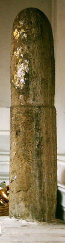

Thailand Trav-E-Logs©
| Kanchanaburi and Nakhon Pathom
Sent 9/21/03 |
|
| back: Ayuthaya | Bridge over River Kwai Yai at Kanchanaburi. |
================================= Kanchanaburi – the place made famous by the WWII epic "Bridge On the River Kwai", is roughly 130 Km west of Bangkok, Thailand. The guidebooks say it's worth a visit, so off I went. =================================
Sep. 5 - 7, 2003
Left Bangkok from the Thornburi train station, a real pleasure, because it's just a 10-minute boat ride from my guesthouse. Traveling light is another luxury I'm learning to enjoy. Leave my big pack in the Taewez Guesthouse in Bangkok, and stuff everything needed for a few days in the large day sack, along with my laptop. First stop was Nakhon Pathom, the longest continually inhabited community in Thailand. Seeing Phra Pathom Chedi (pagoda), the tallest Buddhist monument in the world was interesting. The original chedi, buried within the present pagoda, dates from the early 6th century. Okay, it's not that great, but I'm a tourist, and it was on the way. Below are five photos of Taoist, Hindu, and Buddhist images found at this Wat.
Saw everything worth seeing in about an hour, so decided to continue the journey west. No trains until tomorrow so took the two-hour local bus ride to Kanchanaburi. Good thing, as it started pouring as I boarded the bus.
|  |
The bus station in Kanchanaburi is a long way from the guesthouse I aimed to stay in, so started the 45-minute walk as the weather had cleared up. Sam's House was by the river, and features nice sitting rooms as well as restaurant with a view. The advantage of being so far up the river, almost at the "Bridge On the River Kwai", is that it is away from the noise of disco and kareoke rafts so popular closer to town. The location was also convenient during the next two days for biking to many of the tourist sites, including "The Bridge", museums, shrines, the city pillar, and a big, almost deserted shopping complex. As luck would have it, a tourist train was scheduled to cross the infamous bridge shortly after my bicycle arrived, affording a great Kodak moment. Note the closer two curved spans are original.
Construction of the Death Railway to Myanmar caused 90,000 to 100,000 forced laborer deaths, along with 16,000 POW's. Now, many visitors tour this region to view the scattered WWII military sites. Back in town, I toured one of the rather large Allied War Cemeteries to help put things in perspective. It was interesting to observe the male, female, officers, and enlisted gravestones next to one another, without regard to sex, rank or religion. Only the deceased's military division is used to group the stones. Walked down row upon row of headstones, reading the inscriptions. It's hard to imagine the number of 40-year-old Privates and Seaman who are buried here. The second evening, I watched a VCD of "Bridge On the River Kwai", at a local restaurant. Yes, there were two bridges built, but unlike the movie, the first was actually put in service. Part of the second bridge, built of steel, still is in use today (see picture). Together, the bridges were in use for 20 months before the Allies bombed the center spans.
I'm beginning to see a lot more of the countryside (and birds, too) by avoiding long-distance busses and taking trains. Ordinary trains when practical, and not the air-conditioned nor express trains. The fares are unbelievably cheap. A two-hour train trip for under $1.00.
Enjoy!
Bill
------------------------------
Email me at the juno.com address "dancer2SEAsia"
"Travel is Fatal to Bigotry, Prejudice, and Narrow-minded ness" .... attributed to Mark Twain
| next: Sangkhlaburi |
| back: Ayuthaya |